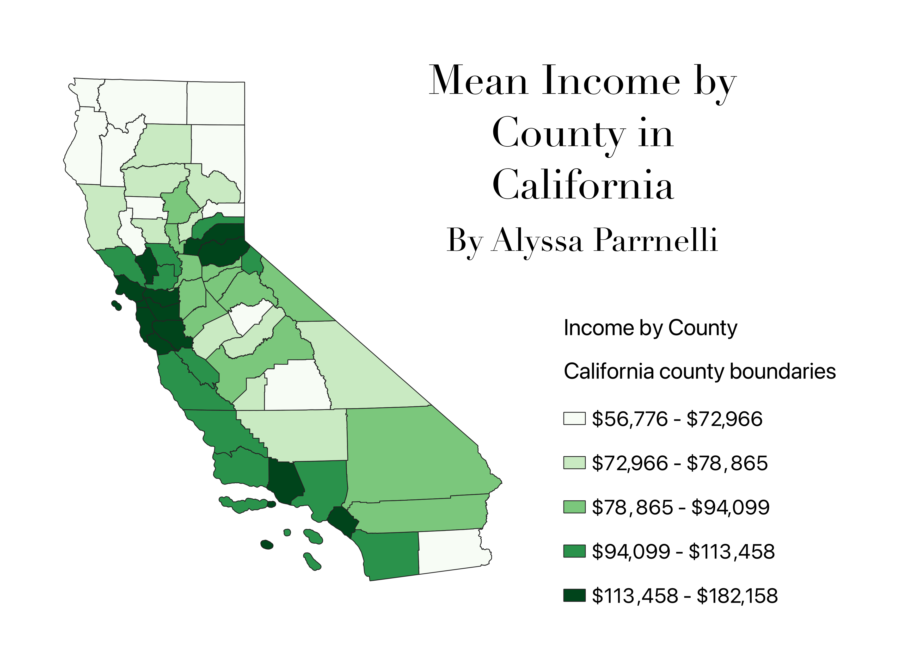

Homework 6: Census data choropleth
Alyssa Parrnelli
Description of your map

This choropleth shows the mean income by county in California.
This dataset had income data for every county, the csv just had to be cleaned and columns with other income information removed.
This map shows patterns of mean income in the state and is viewed in the California state projection 3310.
Data used for this project
CSV dataset
CSV dataset link
Link to geoJSON in 4326